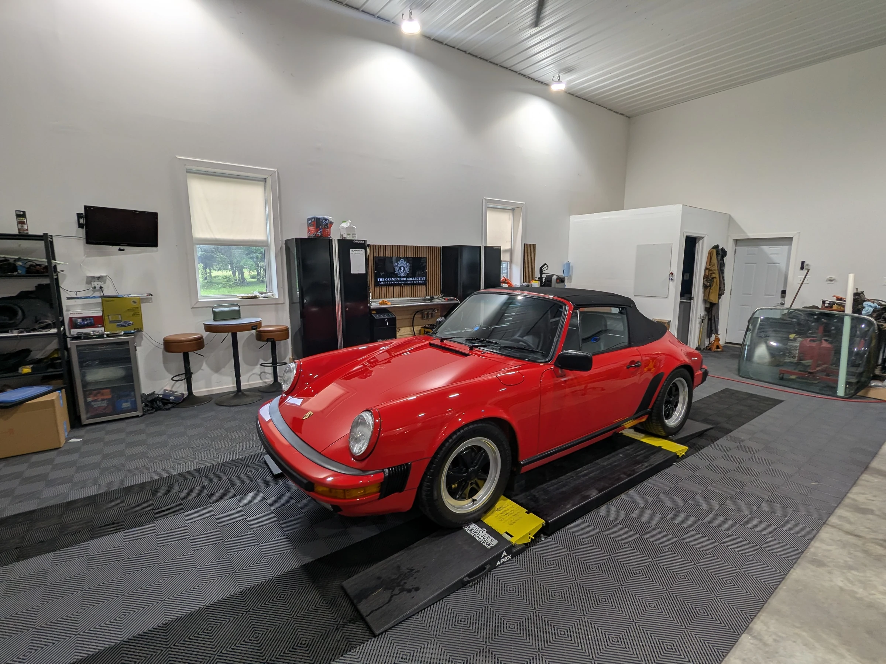

Reveal, retain, record
Remove road film, grease, and loose contamination while leaving original finishes, coatings, fasteners, markings, and visible age in place whenever they are sound.
Best question: What is actually here?
Dry ice is a precise cleaning medium—not a promise to make every surface new. Its greatest value is helping us reveal, inspect, and document the vehicle with less contamination in the way.
Solid CO₂ pellets strike contamination and sublimate into gas. There is no wash water and no blasting media left behind.
The loosened material still has to be managed. Pressure, media flow, distance, angle, dwell time, and temperature still demand judgment. Labels, wiring, rubber, aged coatings, loose finishes, and previous repairs change the plan.
“Dry ice can reveal a surface. It cannot reverse corrosion, repair damage, or guarantee that every stain will leave.”
Remove road film, grease, and loose contamination while leaving original finishes, coatings, fasteners, markings, and visible age in place whenever they are sound.
Best question: What is actually here?Cleaning may expose deterioration that needs mechanical, corrosion, coating, or refinishing work. Those repairs are a separate scope, often involving specialist trades.
Best question: What must be renewed?Presentation is refined against a defined standard, event, or class. Additional work may improve uniformity while providing less preservation benefit—and more alteration risk.
Best question: What will the standard reward?The exact curve varies by vehicle. The principle does not: each added round of intervention should earn its place.
A consultation and test area come first. Some vehicles benefit from conventional cleaning, hand work, disassembly, specialist repair, or no intervention at all.
Undercarriages, engine bays, cavities, jambs, mechanical assemblies, and preservation preparation where residue and added moisture are undesirable.
Loose coatings, brittle labels, failing insulation, exposed wiring, aged rubber, soft finishes, unknown repairs, and active corrosion require testing or exclusion.
Dry ice does not replace mechanical repair, rust treatment, refinishing, replacement of failed coatings, or corrective bodywork.
Staining, patina, etching, heat cycling, oxidation, and prior intervention can remain visible after responsible cleaning.
Share the vehicle, the areas you want documented, and whether the goal is preservation, restoration planning, or presentation.
Schedule a preservation consultation